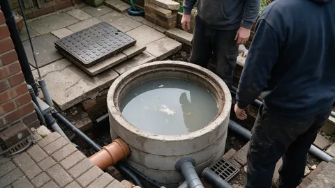
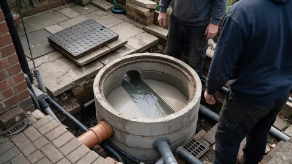
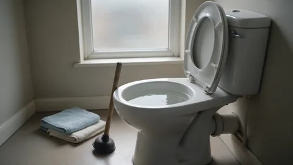
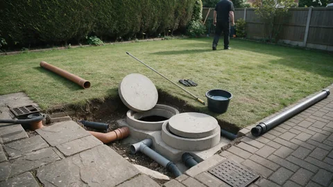
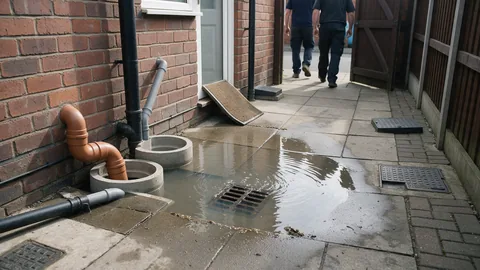
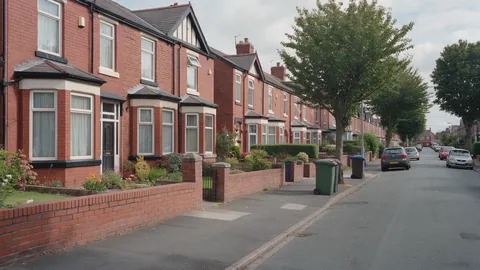
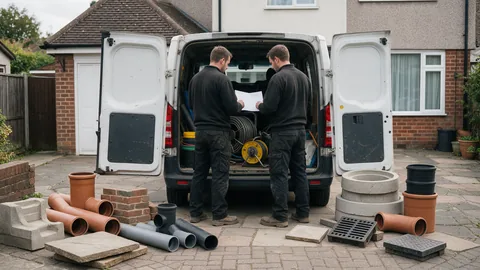

Photo credits
Where the pictures come from.
Every picture on this site was generated for this demo. None of them shows Culvermill's work, because Culvermill does not exist, and none of them is a photograph of a real drain, a real job or a real person.
| What it shows | Where it came from | Used for | |
|---|---|---|---|
 | The engineer at an open chamber used on the home page and the surveys page | Generated for this demo | Illustrative only |
 | The 'before' half of the slider: a chamber backed up to the frame | Generated for this demo | Illustrative only |
 | The 'after' half of the slider, generated from the 'before' picture so it is the same chamber | Generated for this demo | Illustrative only |
 | A gully with the grating off and the pot full, used on the blockages page | Generated for this demo | Illustrative only |
 | Drain rods being fed into an open chamber | Generated for this demo | Illustrative only |
 | A jetting hose running across a yard and into a chamber | Generated for this demo | Illustrative only |
 | A toilet pan full nearly to the rim, used on the urgent page and the work page | Generated for this demo | Illustrative only |
 | A camera reel and monitor at an open chamber, used on the surveys page and the advice article | Generated for this demo | Illustrative only |
 | Looking down into a well built chamber with the channel running clear | Generated for this demo | Illustrative only |
 | Roots pulled out of a drain, used on the repairs page and the blockages article | Generated for this demo | Illustrative only |
 | A patch liner laid out beside a trench, used on the repairs page | Generated for this demo | Illustrative only |
 | An excavation in a block paved path with a cracked clay pipe in the bottom | Generated for this demo | Illustrative only |
 | A soakaway pit lined and part filled with clean stone, used on the soakaways page | Generated for this demo | Illustrative only |
 | A gully pot being cleared by hand, used on the gullies page | Generated for this demo | Illustrative only |
 | A septic tank cover lifted in a rural garden, used on the septic tanks page | Generated for this demo | Illustrative only |
 | Water risen out of a gully and spread across a yard, used on the urgent page | Generated for this demo | Illustrative only |
 | A street of Merseyside terraced and semi detached houses, used on the areas pages | Generated for this demo | Illustrative only |
 | Two engineers at a van tailgate, used on the about page | Generated for this demo | Illustrative only |
The rest of it
Everything else on the page is drawn in the browser: the brand mark, the icons, the pipe rule under each heading and the corner brackets and read-out on the survey pictures. No stock photography, no clip art and no third party images.
Nobody in any picture is identifiable, and no van, sign, packaging or workwear carries a real name or logo. Every file is a WebP under 200 KB.
The words
All the copy on this site was written for this demo. The firm, the people, the jobs and the reviews are invented. Anything factual, like which drain is normally whose or why a soakaway fails, is general trade knowledge rather than advice on your property.
The numbers
The firm's number, 01632 960604, comes from the range Ofcom keeps for television and film, so it rings nobody. The email address ends in .example, which cannot receive anything. The only real number anywhere on this site is Clockwork's own, 07460 038202, in the bar at the top and the note at the bottom, and it is labelled as Clockwork's rather than the firm's.
Want one like this for a real firm?
Ring Clockwork on the number in the bar at the top of the page. This demo is here to show what gets built, not to sell a drainage job.